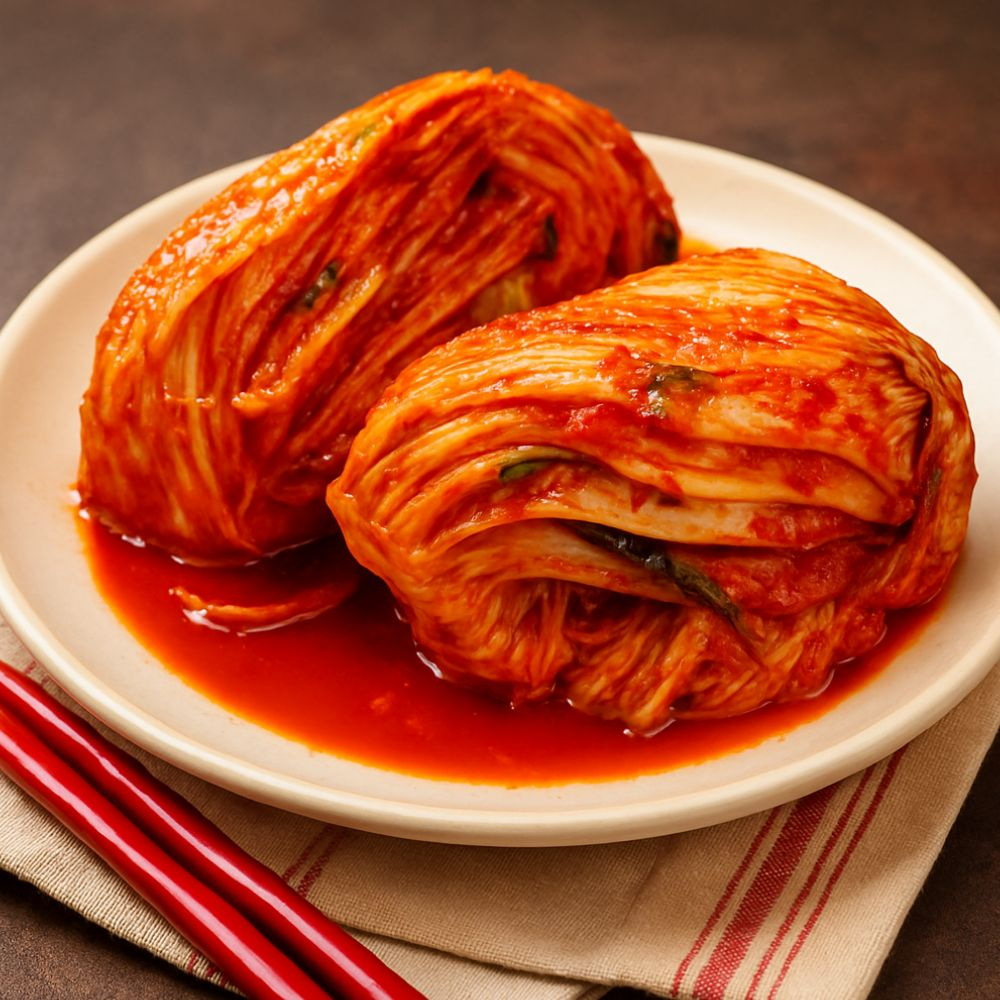
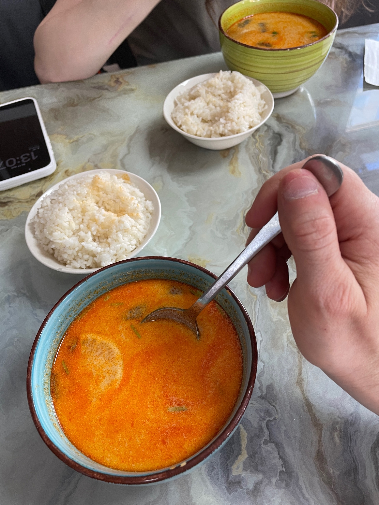
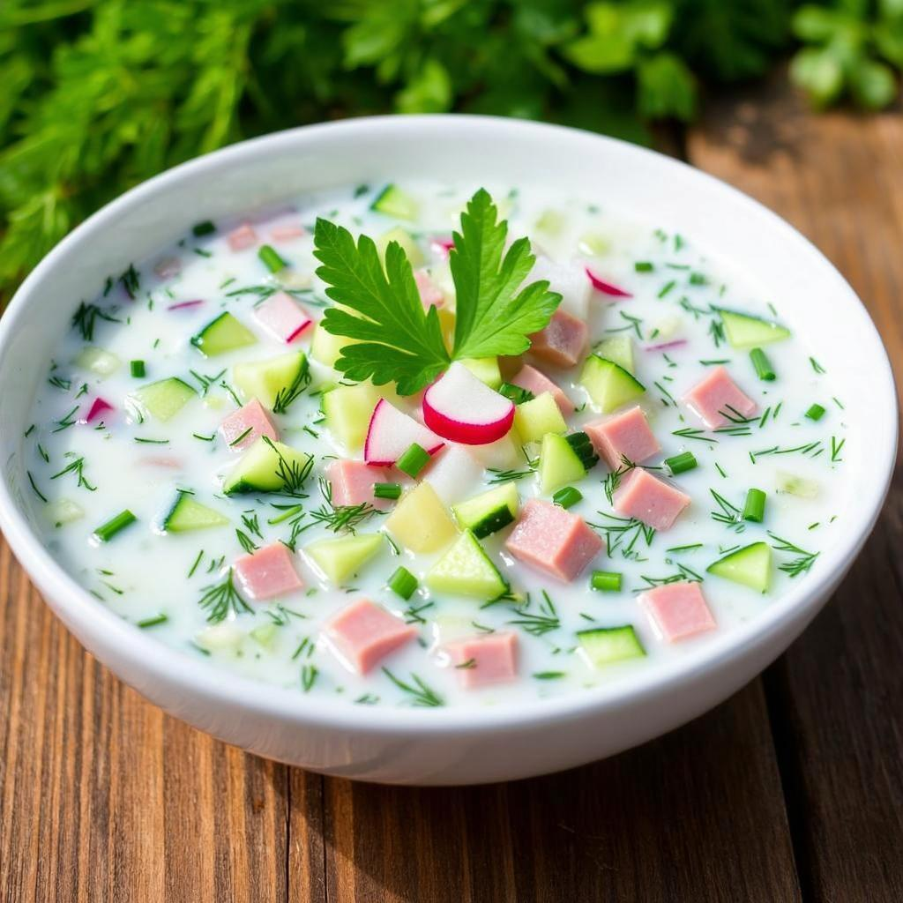
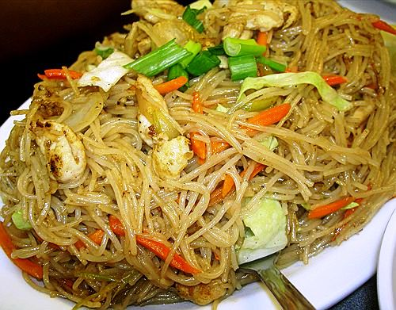
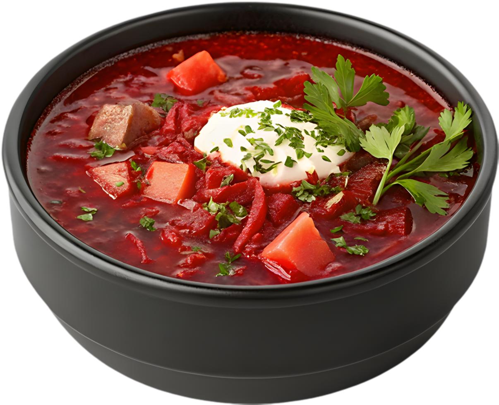

| Название блюда | Оценка (1-10) | Ссылка на рецепт | Фото блюда |
|---|---|---|---|
| Кимчи (Корея) | 10 | Рецепт Кимчи |  |
| Том Ям (Таиланд) | 9 | Рецепт супа Том Ям |  |
| Окрошка (Россия) | 10 | Рецепт Окрошки |  |
| Пансит (Филиппины) | 10 | Рецепт Пансита |  |
| Борщ (Россия) | 10 | Рецепт Борщаа |  |